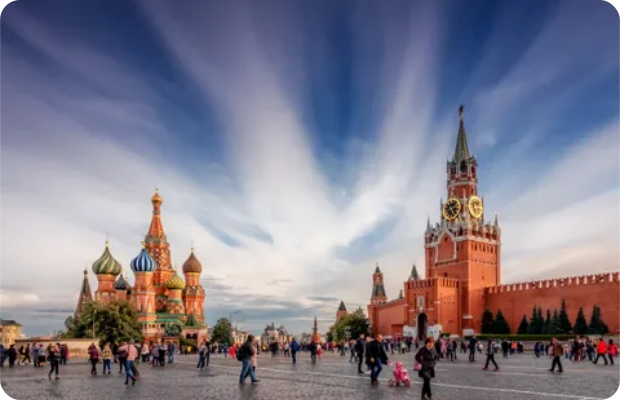
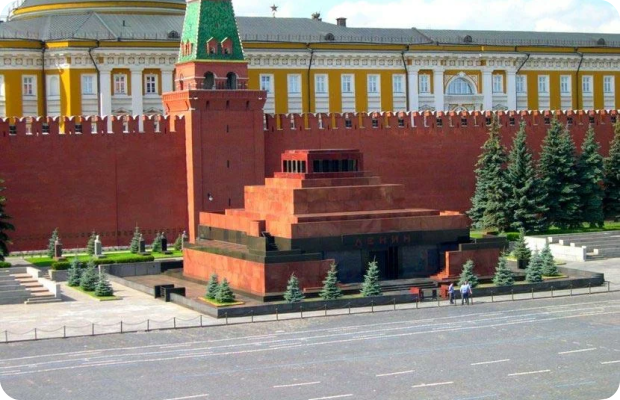
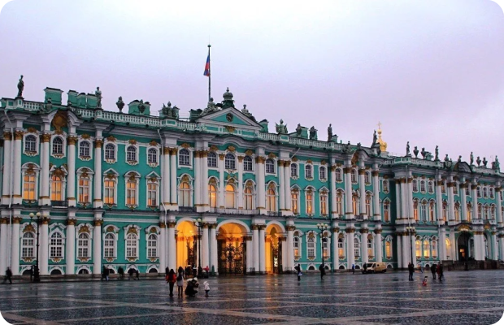
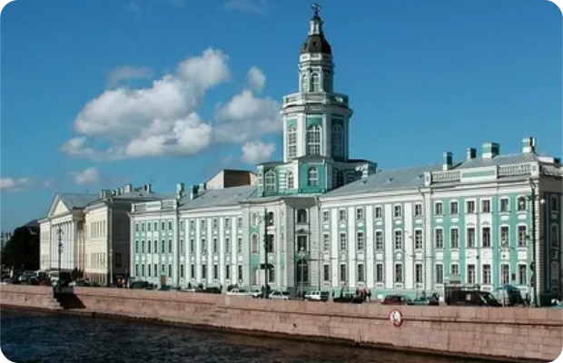

Достопримечательности Москвы

Храм Василия Блаженного
Храм Василия Блаженного (Покровский собор) — православный храм на Красной площади в Москве, один из самых популярных культурных символов России. Архитектурный ансамбль храма представляет собой чёткую геометрическую структуру в виде восьмиконечной звезды — ромба, вписанного в квадрат. На едином подклете- основании расположены девять отдельных храмов.

Красная площадь
Красная площадь — главная площадь Москвы и России, расположена между Московским Кремлём (к западу) и Китай-городом (на восток). 12 Выходит к берегу Москвы-реки через пологий Васильевский спуск. Общая длина Красной площади — 330 метров, ширина — 75 метров, площадь — 24 750 м². На площади расположены: Лобное место, памятник Минину и Пожарскому, Мавзолей Владимира Ленина, некрополь у Кремлёвской стены. В северной части площади находятся Исторический музей и Казанский собор, в южной — Покровский собор

Кремль
Кремль — это древнейшая часть Москвы, главный общественно-политический и историко- художественный комплекс города, официальная резиденция Президента Российской Федерации. В плане Кремль представляет собой неправильный треугольник площадью 27,5 гектара. Южная стена обращена к Москве-реке, северо-западная — к Александровскому саду, восточная — к Красной площади. На территории Кремля расположено 20 башен, из которых круглое сечение имеют 3 башни в углах треугольника. В архитектурный ансамбль входят 8 соборов, среди которых наибольшее значение имеет Успенский собор.

Исторический музей
Государственный исторический музей в Москве – первый в России, крупнейший в СССР и РФ музей национальной истории и культуры. В нем хранятся бесценные памятники археологии, нумизматики, древнерусской живописи и книжности, оружие, произведения изобразительного и декоративно-прикладного искусства.

Мавзолей
Мавзолей Ленина — мемориальное сооружение, возведённое в Москве на Красной площади в 1924 году. Это монументальный памятник-усыпальница, возведённый по проекту архитектора Алексея Щусева. Он стал символом советской власти и сакральным местом поклонения для множества людей. Внутри сооружения находится стеклянный саркофаг с телом Владимира Ленина.

Храм Христа Спасителя
Храм Христа Спасителя — кафедральный собор Русской православной церкви, расположенный в центральной части Москвы на улице Волхонке. Храм имеет статус патриаршего подворья и является коллективным кенотафом воинов Русской императорской армии, погибших в войне с Наполеоном. На стенах храма начертаны имена офицеров, павших в войне и Заграничных походах 1797–1806 и 1813–1814 годов

Большой театр
Большой театр в Москве — это центр российской и мировой музыкальной культуры, один из главных символов отечественной культуры. Его музей и историческое здание — объект культурного наследия народов России федерального значения. Фасад театра поддерживается элегантными колоннами в неоклассическом стиле, а по фронтону с замысловатой резьбой галопом скачет четверка лошадей. Над портиком находится колесница бога Аполлона, которая стала узнаваемым украшением и символом Большого театра.

Третьяковская галерея
Государственная Третьяковская галерея — художественная галерея в Москве, Россия, которая считается ведущим хранилищем русского изобразительного искусства в мире. Фасад здания галереи был спроектирован художником Виктором Васнецовым в своеобразном стиле русской сказки. Здание было построено в 1902–1904 годах к югу от Московского Кремля.

Воробьевы горы
Воробьёвы горы — это местность на юго- западе Москвы, представляющая собой высокий правый берег в излучине Москвы- реки, покрытый лесопарком. Горы расположены напротив Лужников и считаются одним из «семи холмов Москвы». Они протягиваются от устья реки Сетуни до Андреевского моста Малого кольца Московской железной дороги. На востоке граничат с Нескучным садом.

Парк Горького
Парк Горького — главный парк страны, точка культурного притяжения в самом центре Москвы площадью 250 га. Открылся в 1928 году на месте первой Всероссийской сельскохозяйственной выставки (ВСХВ). 2 Стал первым в мире массовым парком культуры и отдыха. На его базе создавался уникальный проект — «комбинат культуры».
Достопримечательности Казани

Башня Сююмбике
Башня Сююмбике — семиярусная башня из красного кирпича на территории Казанского кремля. Описание строения: Состоит из последовательно уменьшающихся многоугольных ярусов геометрической формы. Три нижних четверика и четыре верхних восьмерика увенчаны изящным ребристым шатровым шпилем.

Национальный музей Республики Татарстан
Национальный музей Республики Татарстан — это крупнейшее в республике научно-исследовательское учреждение, имеющее общенациональное значение. Музей был открыт в 1895 году и тогда назывался Казанским городским научно-промышленным музеем. Музей занимает здание бывшего Гостиного двора, которое является памятником архитектуры и истории РФ и Республики Татарстан. С тех пор менялось не только название, но и пополнялась богатая коллекция музея.

Улица Баумана
Улица Баумана — главная и частично пешеходная улица в Казани, расположенная в историческом центре города, в Вахитовском районе. Начинается около Казанского кремля от площади Тысячелетия и продолжается на юго-восток, пересекая улицы Чернышевского, Мусы Джалиля, Кави Наджми, Астрономическая, Университетская, и заканчивается на площади Тукая, где пересекается с улицей Пушкина

Пушечный двор
Пушечный двор представлял собой мануфактуру, с плавильными печами, кузницами, литейными амбарами. В техническом отношении пушечный двор был одним из передовых предприятий 17 века. На московском пушечном дворе отливались пушки, колокола и другие нужные металлические изделия. Самым крупным пушкам, изготовленным на пушечном дворе, давали грозные имена – «Лев», «Сокол», «Волк», «Единорог».
 дворец_modal.svg)
Губернаторский (президентский) дворец
Губернаторский (президентский) дворец в Казани — резиденция главы Татарстана. Здание расположено в Казанском Кремле, напротив Благовещенского собора, рядом с Музеем государственности Татарстана и башней Сююмбике. Дворец построен в псевдовизантийском стиле, для которого характерна чёткая симметрия. В здании есть антресольный и подвальный этажи. Главный фасад имеет два входа. Здание представляет собой полукруг, во внутренний двор можно заехать через большую арку.

Кремлёвская набережная
Кремлёвская набережная — пешеходная набережная реки Казанка в центре города Казань. Имеет длину около полутора километров и пролегает от стен Казанского Кремля до Национального культурного центра «Казань». Является одной из современных городских достопримечательностей и одним из мест массового посещения в городе.

Центр семьи «Казан»
Центр семьи «Казан» — главный дворец бракосочетаний. дание имеет оригинальную архитектуру и напоминает казан, традиционный азиатский литой котёл над пылающим огнём. 1 Верхняя часть выполнена из меди в форме казана, который символизирует тепло домашнего очага, семейные узы, достаток. По ободу медного казана проложен орнамент из мифических зилантов, или «казанских драконов», с которыми легенды связывают основание города. Чашу поддерживают арки в виде языков пламени. Вечером казан подсвечивают красным цветом, создавая иллюзию огня

Благовещенский собор
Благовещенский собор Московского Кремля — памятник древнерусской архитектуры и живописи, бывший великокняжеский и царский домовый храм. Первоначально имел три главы — центральную и две над восточными углами храма. Во второй половине XVI века на сводах галерей были устроены четыре придела со своими главами и добавлены ещё две главы на основном объёме. В итоге собор стал девятиглавым и приобрёл пирамидальное завершение от глав приделов до центральной главы

Театр кукол «Экият»
Татарский государственный театр кукол «Экият» - это один из старейших театров кукол России. Был открыт в 1934 году и работает на русском и татарском языках. Театр кукол «Әкият» стремится работать под девизом: «Современный театр - для всей семьи». Здесь с успехом ставятся спектакли для детей, подростков и их родителей.

Мечеть Кул-Шариф
Мечеть «Кул-Шариф» — главная джума-мечеть республики Татарстан и города Казани, расположенная на территории Казанского кремля. Одна из главных достопримечательностей города. Комплекс мечети представляет собой композицию из главного здания (с шестью минаретами и двумя пристроенными по бокам полупавильонами) и отдельно стоящего двухэтажного административно-хозяйственно-пожарного павильона, выполненного в такой же стилистике.
Достопримечательности Санкт-Петербурга

Невский проспект
Не́вский проспе́кт — главная улица Санкт-Петербурга, протянувшаяся на 4,5 км от Адмиралтейства до Александро-Невской лавры. Пересекает Мойку, канал Грибоедова и Фонтанку. Наибольшая ширина составляет 60 м, наименьшая — 25 м. Нечётная сторона неофициально называется «теневой», чётная — «солнечной»

Русский музей
Русский музей — первый в стране государственный музей русского изобразительного искусства, коллекция которого насчитывает 400 000 экспонатов и представляет историю культуры более чем за тысячу лет. Основанный в 1895 году по Указу императора Николая II, сегодня Русский музей представляет собой огромный комплекс.

Петропавловская крепость
Петропавловская крепость расположена на Заячьем острове. В плане она имеет вид неправильного шестиугольника, вытянутого с запада на восток. Шесть выступающих углов – это пятигранные по форме бастионы. Вначале бастионы были земляными, затем - кирпичными и только в конце XVIII века они были построены в камне.

Храм Спаса на Крови
Спас-на-крови — один из самых известных мемориальных православных храмов в городе Санкт-Петербурге, возведенный во имя Воскресения Христова. Он был сооружен в память того, что на его месте 1 марта 1881 года был смертельно ранен император Александр II в результате покушения.

Эрмитаж
Эрмитаж — российский государственный художественный и культурно-исторический музей в Санкт-Петербурге, одно из крупнейших в мире учреждений подобного рода. Возник в 1764 году как частная коллекция произведений искусства, приобретавшихся в частном порядке российской императрицей Екатериной II. Первоначально это собрание размещалось в главной императорской резиденции в специальном дворцовом флигеле — Эрмитаже (в современном комплексе — Малый Эрмитаж).

Мариинский театр
Мариинский театр — театр оперы и балета в Санкт-Петербурге, один из ведущих музыкальных театров России и мира. Здание театра, построенное в 1860 году, считается одним из красивейших не только в России, но и во всём мире. Зрительный зал считается одним из самых красивых в мире. Необычен цвет его оформления — цвет морской волны: голубые стены, синий бархат и синие кресла. Занавес создан в 1914 году по рисункам выдающегося театрального художника Александра Головина

Летний сад
Ле́тний сад — парковый ансамбль, памятник садово-паркового искусства первой трети XVIII века в Центральном районе Санкт-Петербурга. Сад был заложен по повелению Петра I в 1704 году и первоначально был регулярным. Занимает отдельный одноимённый остров, омываемый реками Невой, Фонтанкой, Мойкой и Лебяжьей канавкой.

Казанский собор
Музей российского природного камня – такое название закрепилось за Казанским собором не просто так. Главный материал – известковый туф – добывали в районе Гатчины. Так называемый пудостский камень напоминает итальянский травертино, который использовался при строительстве собора Святого Петра. Стиль, в котором выполнен собор, однозначно не определяют. Самая расхожая теория относит его к ампиру, хотя некоторые исследователи настаивают на классицизме, но не греческом, а итальянском.

Кунсткамера
Кунсткамера — это старейший музей России, основанный в 1714 году на базе личных коллекций Петра I, приобретенных им во время путешествий в Западную Европу. Первоначально они размещались в Летнем дворце Петра I, в специальном помещении, названном «Кунсткамера», что переводится с немецкого как «кабинет редкостей».

Исаакиевский собор
Исаакиевский собор — крупнейший православный храм города Санкт-Петербурга, которому присвоен статус музея. Он располагается на знаменитой Исаакиевской площади. Освящён во имя преподобного Исаакия Далматского, которого почитал Пётр I. Собор был построен в период с 1818 по 1858 годы. Над созданием проекта работал архитектор Огюст Монферран. Строительство проводилось под руководством императора Николая I
Оставьте свой отзыв